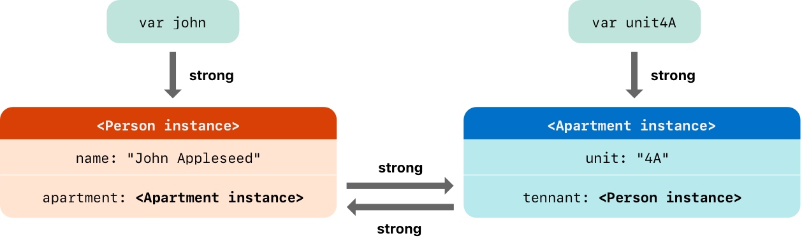
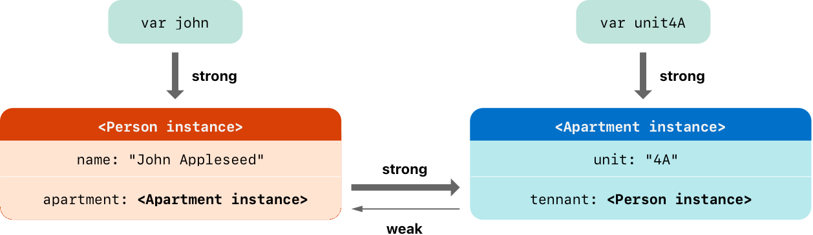

Automatic Reference Counting¶ 自動参照カウント¶
Swift uses Automatic Reference Counting (ARC) to track and manage your app’s memory usage. In most cases, this means that memory management “just works” in Swift, and you do not need to think about memory management yourself. ARC automatically frees up the memory used by class instances when those instances are no longer needed. スウィフトは、あなたのアプリのメモリ使用を追跡して管理するために、自動参照カウント（ARC）を使います。ほとんどの場合、これは、スウィフトにおいてメモリ管理が「正確に機能する」こと、そしてあなたはあなた自身でメモリ管理について考える必要がないことを意味します。ARCはクラスインスタンスによって使われるメモリを、それらのインスタンスがもはや必要でないとき、自動的に自由にします。
However, in a few cases ARC requires more information about the relationships between parts of your code in order to manage memory for you. This chapter describes those situations and shows how you enable ARC to manage all of your app’s memory. Using ARC in Swift is very similar to the approach described in Transitioning to ARC Release Notes for using ARC with Objective-C. しかし、２、３の場合には、ARCは、あなたのためにメモリを管理するために、あなたのコードの部分間の関係に関するより多くの情報を要求します。この章は、それらの状況を記載して、あなたがどのようにARCにあなたのアプリのメモリの全てを管理させるかについて示します。スウィフトでのARCの使用は、Objective-CでARCを使うためのTransitioning to ARC Release Notesで記述される取り組みに非常に似ています。
Reference counting applies only to instances of classes. Structures and enumerations are value types, not reference types, and are not stored and passed by reference. 参照カウントが唯一適用されるのは、クラスのインスタンスに対してです。構造と列挙は値型であって、参照型ではありません、そして参照によって格納されたり渡されたりしません。
How ARC Works¶ ARCは、どのように働きますか¶
Every time you create a new instance of a class, ARC allocates a chunk of memory to store information about that instance. This memory holds information about the type of the instance, together with the values of any stored properties associated with that instance. あなたがクラスの新しいインスタンスをつくるたびに、ARCはメモリのある量を割り当てて、そのインスタンスに関する情報を格納します。このメモリは、インスタンスの型に関する情報を、そのインスタンスと結びつけられるあらゆる格納プロパティの値と共に持ちます。
Additionally, when an instance is no longer needed, ARC frees up the memory used by that instance so that the memory can be used for other purposes instead. This ensures that class instances do not take up space in memory when they are no longer needed. その上に、インスタンスがもはや必要でないとき、ARCはそのインスタンスによって使われるメモリを開放します、それでメモリが代わりに他の目的のために使われることができます。これは、クラスインスタンスが、それらがもはや必要でない時に、メモリ上で場所を取らないことを確実にします。
However, if ARC were to deallocate an instance that was still in use, it would no longer be possible to access that instance’s properties, or call that instance’s methods. Indeed, if you tried to access the instance, your app would most likely crash. しかし、ARCがまだ使用中だったインスタンスの割り当て解除をすることになったならば、そのインスタンスのプロパティにアクセスすることや、そのインスタンスのメソッドを呼ぶことは、もはや可能でないでしょう。実はそれどころか、あなたがそのインスタンスにアクセスしようとするならば、あなたのアプリはたぶんクラッシュするでしょう。
To make sure that instances don’t disappear while they are still needed, ARC tracks how many properties, constants, and variables are currently referring to each class instance. ARC will not deallocate an instance as long as at least one active reference to that instance still exists. それがまだ必要な間にインスタンスが消えないことを確実にするために、ARCは、どれくらいのプロパティ、定数、および変数が目下のところ各クラスインスタンスに言及しているかを追跡します。ARCは、そのインスタンスへの少なくとも１つの活発な参照がまだ存在する限り、インスタンスの割り当て解除をしません。
To make this possible, whenever you assign a class instance to a property, constant, or variable, that property, constant, or variable makes a strong reference to the instance. The reference is called a “strong” reference because it keeps a firm hold on that instance, and does not allow it to be deallocated for as long as that strong reference remains. これを可能にするために、あなたがクラスインスタンスをプロパティ、定数、または変数に代入するときはいつでも、そのプロパティ、定数、または変数はそのインスタンスへの強い参照を作ります。この参照が「強い」参照と呼ばれるのはそれがそのインスタンスに対する堅い支配力を保つからです、そしてその強い参照が残る限りは、そのインスタンスがメモリ割り当て解除されるのを許しません。
ARC in Action¶ ARCの動作¶
Here’s an example of how Automatic Reference Counting works. This example starts with a simple class called Person, which defines a stored constant property called name:
自動参照カウントがどのように働くかの例は、ここにあります。この例は、Personと呼ばれる単純なクラスから始めます、それは、nameと呼ばれる格納定数プロパティを定義します：
- class Person {
- let name: String
- init(name: String) {
- self.name = name
- print("\(name) is being initialized")
- }
- deinit {
- print("\(name) is being deinitialized")
- }
- }
The Person class has an initializer that sets the instance’s name property and prints a message to indicate that initialization is underway. The Person class also has a deinitializer that prints a message when an instance of the class is deallocated.
Personクラスは、インスタンスのnameプロパティを設定して、初期化が進行中であることを示すためにメッセージを出力するイニシャライザを持ちます。Personクラスはまた、クラスのインスタンスが割り当て解除されるとき、メッセージを出力するデイニシャライザを持ちます。
The next code snippet defines three variables of type Person?, which are used to set up multiple references to a new Person instance in subsequent code snippets. Because these variables are of an optional type (Person?, not Person), they are automatically initialized with a value of nil, and do not currently reference a Person instance.
次のコード断片は、型Person?の３つの変数を定義します、それは、以降のコード断片の中のある１つの新しいPersonインスタンスへの複数の参照を準備するために使われます。これらの変数がオプショナル型（Personではなく、Person?）であることから、それらは自動的にnilの値で初期化されて、今はPersonインスタンスに参照をつけません。
- var reference1: Person?
- var reference2: Person?
- var reference3: Person?
You can now create a new Person instance and assign it to one of these three variables:
あなたは、いま新しいPersonインスタンスを作成して、それをこれらの３つの変数のうちの１つに代入することができます：
- reference1 = Person(name: "John Appleseed")
- // Prints "John Appleseed is being initialized"（「John Appleseedは、初期化された」を出力します）
Note that the message "John Appleseed is being initialized" is printed at the point that you call the Person class’s initializer. This confirms that initialization has taken place.
あなたがPersonクラスのイニシャライザを呼んだ時点で、メッセージ"John Appleseed is being initialized"が出力されるという点に注意してください。これは、初期化が起こったことを確認します。
Because the new Person instance has been assigned to the reference1 variable, there is now a strong reference from reference1 to the new Person instance. Because there is at least one strong reference, ARC makes sure that this Person is kept in memory and is not deallocated.
新しいPersonインスタンスがreference1変数に代入されたので、強い参照が現在reference1から新しいPersonインスタンスまで存在します。少なくとも１つの強い参照があるので、ARCはこのPersonがメモリに保たれて割り当て解除されないことを確実にします。
If you assign the same Person instance to two more variables, two more strong references to that instance are established:
あなたが同じPersonインスタンスをさらに２つの変数に代入するならば、そのインスタンスへのさらに２つの強い参照が確立されます：
- reference2 = reference1
- reference3 = reference1
There are now three strong references to this single Person instance.
現在この１つのPersonインスタンスへの３つの強い参照があります。
If you break two of these strong references (including the original reference) by assigning nil to two of the variables, a single strong reference remains, and the Person instance is not deallocated:
あなたが変数のうちの２つにnilを代入することによってこれらの強い参照のうちの（最初の参照を含む）２つを壊すならば、１つの強い参照が残ります、そしてPersonインスタンスは割り当て解除されません：
- reference1 = nil
- reference2 = nil
ARC does not deallocate the Person instance until the third and final strong reference is broken, at which point it’s clear that you are no longer using the Person instance:
ARCは、Personインスタンスの割り当て解除を３番目で最後に残ったの強い参照が壊れるまで行いません、その時点では、あなたがもはやPersonインスタンスを使っていないことは明白です：
- reference3 = nil
- // Prints "John Appleseed is being deinitialized"（「John Appleseedは、デイニシャライズされた」を出力します）
Strong Reference Cycles Between Class Instances¶ クラスインスタンス間の強い参照循環¶
In the examples above, ARC is able to track the number of references to the new Person instance you create and to deallocate that Person instance when it’s no longer needed.
上の例で、ARCはあなたがつくる新しいPersonインスタンスへの参照の数を追跡して、そのPersonインスタンスをそれがもはや必要でないとき割り当て解除することができます。
However, it’s possible to write code in which an instance of a class never gets to a point where it has zero strong references. This can happen if two class instances hold a strong reference to each other, such that each instance keeps the other alive. This is known as a strong reference cycle. しかしながら、あるクラスのあるインスタンスが、強い参照を１つも持たない状態になることが決してないコードを書くことは、可能です。２つのクラスインスタンスが強い参照にお互いを守らせるならば、これは起こることができます、各インスタンスが他を生かしておくようなものです。これは、強い参照循環として知られています。
You resolve strong reference cycles by defining some of the relationships between classes as weak or unowned references instead of as strong references. This process is described in Resolving Strong Reference Cycles Between Class Instances. However, before you learn how to resolve a strong reference cycle, it’s useful to understand how such a cycle is caused. あなたは、クラス間の関係の一部を強い参照としてでなくて弱い、または非所有参照として定義することによって強い参照循環を解消します。この過程は、クラスインスタンス間の強い参照循環の解消で記述されます。しかし、あなたが強い参照循環を解消する方法を学ぶ前に、そのような循環がどのように引き起こされるか理解することは役に立ちます。
Here’s an example of how a strong reference cycle can be created by accident. This example defines two classes called Person and Apartment, which model a block of apartments and its residents:
強い参照循環がどのように偶然に作られることができるかの例は、ここにあります。この例はPersonとApartmentと呼ばれる２つのクラスを定義します、それは、アパートの１区画とその居住者をモデル化します：
- class Person {
- let name: String
- init(name: String) { self.name = name }
- var apartment: Apartment?
- deinit { print("\(name) is being deinitialized") }
- }
- class Apartment {
- let unit: String
- init(unit: String) { self.unit = unit }
- var tenant: Person?
- deinit { print("Apartment \(unit) is being deinitialized") }
- }
Every Person instance has a name property of type String and an optional apartment property that is initially nil. The apartment property is optional, because a person may not always have an apartment.
あらゆるPersonインスタンスは、型Stringのnameプロパティと初期時にはnilであるオプショナルのapartmentプロパティを持ちます。人は必ずしもアパートを持つわけではないので、apartmentプロパティはオプショナルです。
Similarly, every Apartment instance has a unit property of type String and has an optional tenant property that is initially nil. The tenant property is optional because an apartment may not always have a tenant.
同じように、あらゆるApartmentインスタンスは、型Stringのunitプロパティを持って、初期時にはnilであるオプショナルのtenantプロパティを持ちます。アパートには常に賃借人がいるわけではないので、tenant（テナント、賃借人）プロパティはオプショナルです。
Both of these classes also define a deinitializer, which prints the fact that an instance of that class is being deinitialized. This enables you to see whether instances of Person and Apartment are being deallocated as expected.
これらのクラスの両方ともデイニシャライザを定義します、それは、そのクラスのインスタンスがデイニシャライズされているという事実を出力します。これは、あなたに期待されるようにPersonとApartmentのインスタンスが割り当て解除されているかどうか知ることを可能にします。
This next code snippet defines two variables of optional type called john and unit4A, which will be set to a specific Apartment and Person instance below. Both of these variables have an initial value of nil, by virtue of being optional:
この次のコード断片はjohnとunit4Aと呼ばれるオプショナルの型の２つの変数を定義します、それは、特定のApartmentとPersonインスタンスに以降で設定されます。オプショナルである利点によって、これらの変数の両方とも、nilの初期値を持ちます：
- var john: Person?
- var unit4A: Apartment?
You can now create a specific Person instance and Apartment instance and assign these new instances to the john and unit4A variables:
あなたは、今や特定のPersonインスタンスとApartmentインスタンスを作成して、それらの新しいインスタンスをjohnおよびunit4A変数に代入することができます：
- john = Person(name: "John Appleseed")
- unit4A = Apartment(unit: "4A")
Here’s how the strong references look after creating and assigning these two instances. The john variable now has a strong reference to the new Person instance, and the unit4A variable has a strong reference to the new Apartment instance:
それらの２つのインスタンスの作成と代入の後に強い参照がどのように見えるかが、ここにあります。john変数は現在新しいPersonインスタンスへの強い参照を持ちます、そしてunit4A変数は新しいApartmentインスタンスへの強い参照を持ちます：
You can now link the two instances together so that the person has an apartment, and the apartment has a tenant. Note that an exclamation mark (!) is used to unwrap and access the instances stored inside the john and unit4A optional variables, so that the properties of those instances can be set:
あなたは次に人がアパートを持つように、２つのインスタンスを結びつけることができます、するとアパートには賃借人があります。感嘆符（!）が使われることに注意してください、そうすることでオプショナル変数のjohnとunit4Aに格納されるインスタンスがアンラップされてアクセスされるようになります、それでそれらのインスタンスのプロパティが設定されることができます：
- john!.apartment = unit4A
- unit4A!.tenant = john
Here’s how the strong references look after you link the two instances together: あなたが２つのインスタンスを結びつけた後に強い参照がどのように見えるかが、ここにあります。
Unfortunately, linking these two instances creates a strong reference cycle between them. The Person instance now has a strong reference to the Apartment instance, and the Apartment instance has a strong reference to the Person instance. Therefore, when you break the strong references held by the john and unit4A variables, the reference counts do not drop to zero, and the instances are not deallocated by ARC:
残念なことに、これらの２つのインスタンスを結ぶことは、それらの間で強い参照循環をつくります。Personインスタンスは現在Apartmentインスタンスへの強い参照を持ちます、そして、ApartmentインスタンスはPersonインスタンスへの強い参照を持ちます。したがって、あなたがjohnとunit4A変数によって保持される強い参照を壊すとき、参照総数はゼロに落ちません、なのでインスタンスはARCによって割り当て解除されません：
- john = nil
- unit4A = nil
Note that neither deinitializer was called when you set these two variables to nil. The strong reference cycle prevents the Person and Apartment instances from ever being deallocated, causing a memory leak in your app.
あなたがこれらの２つの変数をnilに設定したとき、どちらのデイニシャライザも呼ばれなかった点に注意してください。強い参照循環はPersonとApartmentインスタンスがともかく割り当て解除されるのを妨げます。そして、あなたのアプリのメモリリークを引き起こします。
Here’s how the strong references look after you set the john and unit4A variables to nil:
あなたがjohnとunit4A変数をnilに設定したあと、強い参照がどのように見えるかは、ここにあります：
The strong references between the Person instance and the Apartment instance remain and cannot be broken.
PersonインスタンスとApartmentインスタンスの間の強い参照は、残っていて、壊されることができません。
Resolving Strong Reference Cycles Between Class Instances¶ クラスインスタンス間の強い参照循環の解消¶
Swift provides two ways to resolve strong reference cycles when you work with properties of class type: weak references and unowned references. あなたがクラス型のプロパティを扱うとき、スウィフトは強い参照循環を解消する２つの道を提供します：弱い参照と非所有参照。
Weak and unowned references enable one instance in a reference cycle to refer to the other instance without keeping a strong hold on it. The instances can then refer to each other without creating a strong reference cycle. 弱いおよび非所有参照は、ある参照循環の中の１つのインスタンスに、他のインスタンスに言及することをそれに対する強い支配力を持つことなく可能にします。インスタンスは、そのあと強い参照循環をつくることなくお互いに言及することができます。
Use a weak reference when the other instance has a shorter lifetime—that is, when the other instance can be deallocated first. In the Apartment example above, it’s appropriate for an apartment to be able to have no tenant at some point in its lifetime, and so a weak reference is an appropriate way to break the reference cycle in this case. In contrast, use an unowned reference when the other instance has the same lifetime or a longer lifetime.
弱い参照を他のインスタンスがより短い生涯を持つ場合に使ってください — すなわち、他のインスタンスが最初にでアロケートされることが可能である時。上のApartment例において、あるアパートがその生涯のどこかの時点で賃借人がいないことがあるというのは妥当です、なのでこの場合は弱い参照が参照循環を壊す適切な方法です。対照的に、非所有参照を他のインスタンスが同じ生涯またはより長い生涯を持つ場合に使ってください。
Weak References¶ 弱い参照¶
A weak reference is a reference that does not keep a strong hold on the instance it refers to, and so does not stop ARC from disposing of the referenced instance. This behavior prevents the reference from becoming part of a strong reference cycle. You indicate a weak reference by placing the weak keyword before a property or variable declaration.
弱い参照は、それが言及するインスタンスに対する強い支配力を保たない参照です、なのでARCは参照をつけられたインスタンスを処分するのを止めません。この挙動は、参照が強い参照循環の一部になるのを妨げます。あなたは、プロパティまたは変数の宣言の前にweakキーワードを置くことによって弱い参照を示します。
Because a weak reference does not keep a strong hold on the instance it refers to, it’s possible for that instance to be deallocated while the weak reference is still referring to it. Therefore, ARC automatically sets a weak reference to nil when the instance that it refers to is deallocated. And, because weak references need to allow their value to be changed to nil at runtime, they are always declared as variables, rather than constants, of an optional type.
弱い参照がそれが言及するインスタンスに対する強い支配力を保たないので、弱い参照がまだそれに言及している間にそのインスタンスが割り当て解除されることは可能です。したがって、ARCは自動的に、弱い参照をそれが言及するインスタンスが割り当て解除されるときnilに設定します。そしてまた、弱い参照はそれらの値を実行時にnilに変更されるのを許される必要があることから、それらは常にオプショナル型の変数として宣言されます、定数ではなく。
You can check for the existence of a value in the weak reference, just like any other optional value, and you will never end up with a reference to an invalid instance that no longer exists. 他のあらゆるオプショナルの値と同じように、あなたは弱い参照の中の値の存在について調べることができます、そして、あなたは既に存在しない無効なインスタンスへの参照に至ることは決してありません。
Note 注意
Property observers aren’t called when ARC sets a weak reference to nil.
プロパティオブザーバーは、ARCが弱い参照をnilに設定するとき呼び出されません。
The example below is identical to the Person and Apartment example from above, with one important difference. This time around, the Apartment type’s tenant property is declared as a weak reference:
下の例は、上記のPersonとApartment例に同一ですが、１つの重要な違いがあります。今度は、Apartment型のtenantプロパティは、弱い参照として宣言されます：
- class Person {
- let name: String
- init(name: String) { self.name = name }
- var apartment: Apartment?
- deinit { print("\(name) is being deinitialized") }
- }
- class Apartment {
- let unit: String
- init(unit: String) { self.unit = unit }
- weak var tenant: Person?
- deinit { print("Apartment \(unit) is being deinitialized") }
- }
The strong references from the two variables (john and unit4A) and the links between the two instances are created as before:
２つの変数（johnとunit4A）からの強い参照と２つのインスタンスの繋がりは、前の通り作成されます：
- var john: Person?
- var unit4A: Apartment?
- john = Person(name: "John Appleseed")
- unit4A = Apartment(unit: "4A")
- john!.apartment = unit4A
- unit4A!.tenant = john
Here’s how the references look now that you’ve linked the two instances together: あなたが２つのインスタンスを結びつけた今、参照がどのように見えるかは、ここにあります：
The Person instance still has a strong reference to the Apartment instance, but the Apartment instance now has a weak reference to the Person instance. This means that when you break the strong reference held by the john variable by setting it to nil, there are no more strong references to the Person instance:
Personインスタンスは依然としてApartmentインスタンスへの強い参照を持ちます、しかし、Apartmentインスタンスは現在はPersonインスタンスへの弱い参照を持ちます。これは、あなたがjohn変数によって保持される強い参照を、それをnilに設定することによって壊すとき、Personインスタンスへの強い参照がもうそれ以上ないことを意味します：
- john = nil
- // Prints "John Appleseed is being deinitialized"（「John Appleseedは、デイニシャライズされた」を出力します）
Because there are no more strong references to the Person instance, it’s deallocated and the tenant property is set to nil:
もうこれ以上Personインスタンスへの強い参照はないことから、それは割り当て解除されます、そしてtenant特性はnilに設定されます：
The only remaining strong reference to the Apartment instance is from the unit4A variable. If you break that strong reference, there are no more strong references to the Apartment instance:
Apartmentインスタンスへの唯一の残っている強い参照は、unit4A変数からです。あなたがその強い参照を壊すならば、Apartmentインスタンスへの強い参照はもうこれ以上ありません：
- unit4A = nil
- // Prints "Apartment 4A is being deinitialized"（「アパート4Aは、デイニシャライズされた」を出力します）
Because there are no more strong references to the Apartment instance, it too is deallocated:
Apartmentインスタンスへの強い参照はもうこれ以上ないので、それも割り当て解除されます：
Note 注意
In systems that use garbage collection, weak pointers are sometimes used to implement a simple caching mechanism because objects with no strong references are deallocated only when memory pressure triggers garbage collection. However, with ARC, values are deallocated as soon as their last strong reference is removed, making weak references unsuitable for such a purpose. ガベージコレクションを使うシステムにおいて、時おり弱いポインタが簡単なキャッシュの仕組みを実装するために使われます、なぜなら強い参照を持たないオブジェクトは、メモリの逼迫がガベージコレクションを引き起こす時のみに割り当て解除されるためです。しかしながら、ARCでは、値はその最後の強い参照が削除されるやいなや割り当て解除されて、弱い参照をそのような目的のためにふさわしくないものにします。
Unowned References¶ 非所有参照¶
Like a weak reference, an unowned reference does not keep a strong hold on the instance it refers to. Unlike a weak reference, however, an unowned reference is used when the other instance has the same lifetime or a longer lifetime. You indicate an unowned reference by placing the unowned keyword before a property or variable declaration.
弱い参照のように、非所有参照は、それが言及するインスタンスに対する強い支配力を保ちません。しかしながら、弱い参照とは違い、非所有参照は他のインスタンスが同じ生涯またはより長い生涯を持つ場合に使われます。あなたは、プロパティまたは変数の宣言の前にunownedキーワードを置くことによって非所有参照を示します。
An unowned reference is expected to always have a value. As a result, ARC never sets an unowned reference’s value to nil, which means that unowned references are defined using non-optional types.
非所有参照は、常にある値を持っていることを期待されます。結果として、ARCは決して非所有参照のもつ値をnilに設定しません、それは非所有参照が非オプショナル型を使って定義されることを意味します。
Important 重要
Use an unowned reference only when you are sure that the reference always refers to an instance that has not been deallocated. 非所有参照を、その参照が常にデアロケートされていないインスタンスに言及するとあなたが確信する時にだけ使用してください。
If you try to access the value of an unowned reference after that instance has been deallocated, you’ll get a runtime error. あなたがある非所有参照の値に、そのインスタンスがデアロケートされてしまった後にアクセスしようとするならば、あなたは実行時エラーを得るでしょう。
The following example defines two classes, Customer and CreditCard, which model a bank customer and a possible credit card for that customer. These two classes each store an instance of the other class as a property. This relationship has the potential to create a strong reference cycle.
以下の例は２つのクラス、CustomerとCreditCardを定義します、それは、銀行顧客とその顧客のために可能なクレジットカードをモデル化します。これらの２つのクラスは、それぞれ他のクラスのインスタンスをプロパティとして格納します。この関係は、強い参照循環をつくる可能性を持ちます。
The relationship between Customer and CreditCard is slightly different from the relationship between Apartment and Person seen in the weak reference example above. In this data model, a customer may or may not have a credit card, but a credit card will always be associated with a customer. A CreditCard instance never outlives the Customer that it refers to. To represent this, the Customer class has an optional card property, but the CreditCard class has an unowned (and non-optional) customer property.
CustomerとCreditCardの関係は、上の弱い参照の例で見られるApartmentとPersonの関係と少しばかり異なります。このデータ・モデルにおいて、顧客はクレジットカードを持っているかもしれないし、持っていないかもしれません、しかし、クレジットカードは常にひとりの顧客と結び付けられます。CreditCardインスタンスは、それが参照するCustomerより決して長生きしません。これを表すために、Customerクラスはオプショナルのcardプロパティを持ちます、しかし、CreditCardクラスは非所有（そして非オプショナル）のcustomerプロパティを持ちます。
Furthermore, a new CreditCard instance can only be created by passing a number value and a customer instance to a custom CreditCard initializer. This ensures that a CreditCard instance always has a customer instance associated with it when the CreditCard instance is created.
さらに、新しいCreditCardインスタンスは、number値とcustomerインスタンスをあつらえのCreditCardイニシャライザに渡すことによってのみ作成されることができます。これは、CreditCardインスタンスがつくられるとき、CreditCardインスタンスが常にそれと結びつけられるCustomerインスタンスを持つことを確実にします。
Because a credit card will always have a customer, you define its customer property as an unowned reference, to avoid a strong reference cycle:
クレジットカードが常にひとりの顧客を持つので、強い参照循環を避けるために、あなたはそのcustomerプロパティを非所有参照として定義します：
- class Customer {
- let name: String
- var card: CreditCard?
- init(name: String) {
- self.name = name
- }
- deinit { print("\(name) is being deinitialized") }
- }
- class CreditCard {
- let number: UInt64
- unowned let customer: Customer
- init(number: UInt64, customer: Customer) {
- self.number = number
- self.customer = customer
- }
- deinit { print("Card #\(number) is being deinitialized") }
- }
Note 注意
The number property of the CreditCard class is defined with a type of UInt64 rather than Int, to ensure that the number property’s capacity is large enough to store a 16-digit card number on both 32-bit and 64-bit systems.
CreditCardクラスのnumberプロパティは、UInt64の型で定義されます、Intではなく、それによってnumberプロパティの容量が32bitと64bitシステムの両方で16桁のカード番号を格納するのに十分に大きいことを保証します。
This next code snippet defines an optional Customer variable called john, which will be used to store a reference to a specific customer. This variable has an initial value of nil, by virtue of being optional:
次のコード断片は、johnと呼ばれる、オプショナルのCustomer変数を定義します。それは、特定の顧客への参照を格納するために使われます。オプショナルであるおかげで、この変数はnilの初期値を持ちます：
- var john: Customer?
You can now create a Customer instance, and use it to initialize and assign a new CreditCard instance as that customer’s card property:
あなたは、現在Customerインスタンスを作成して、それを使って、新しいCreditCardインスタンスを、その顧客のcardプロパティとして初期化して代入することができます：
- john = Customer(name: "John Appleseed")
- john!.card = CreditCard(number: 1234_5678_9012_3456, customer: john!)
Here’s how the references look, now that you’ve linked the two instances: あなたが２つのインスタンスを結んだ今、これらの参照がどのように見えるかは、ここにあります：
The Customer instance now has a strong reference to the CreditCard instance, and the CreditCard instance has an unowned reference to the Customer instance.
Customerインスタンスは現在CreditCardインスタンスへの強い参照を持ちます、そして、CreditCardインスタンスはCustomerインスタンスへの非所有参照を持ちます。
Because of the unowned customer reference, when you break the strong reference held by the john variable, there are no more strong references to the Customer instance:
非所有customer参照であることから、あなたがjohn変数によって保持される強い参照を壊すとき、Customerインスタンスへの強い参照はもうそれ以上ありません：
Because there are no more strong references to the Customer instance, it’s deallocated. After this happens, there are no more strong references to the CreditCard instance, and it too is deallocated:
Customerインスタンスへの強い参照はもうないので、それは割り当て解除されます。これが起こったあと、CreditCardインスタンスへの強い参照はもうありません、そして、それも割り当て解除されます：
- john = nil
- // Prints "John Appleseed is being deinitialized"（「John Appleseedは、デイニシャライズされた」を出力します）
- // Prints "Card #1234567890123456 is being deinitialized"（「カード#1234567890123456は、デイニシャライズされた」を出力します）
The final code snippet above shows that the deinitializers for the Customer instance and CreditCard instance both print their “deinitialized” messages after the john variable is set to nil.
上の最後のコード断片は、CustomerインスタンスとCreditCardインスタンスのためのデイニシャライザが両方ともそれらの「デイニシャライズされた」メッセージを、john変数がnilに設定された後に出力することを示します。
Note 注意
The examples above show how to use safe unowned references. Swift also provides unsafe unowned references for cases where you need to disable runtime safety checks—for example, for performance reasons. As with all unsafe operations, you take on the responsibility for checking that code for safety. 上の例は、どのようにsafe非所有参照を使うかを示します。スウィフトはまたunsafe非所有参照を、あなたが実行時安全確認を無効にする必要がある場合のために提供します — 例えば、性能上の理由のために。すべての安全でない操作と同様に、あなたはコードの安全について検査する責任を持つようになります。
You indicate an unsafe unowned reference by writing unowned(unsafe). If you try to access an unsafe unowned reference after the instance that it refers to is deallocated, your program will try to access the memory location where the instance used to be, which is an unsafe operation.
あなたは、安全でない非所有参照をunowned(unsafe)を書くことによって指し示します。あなたが安全でない非所有参照に、それが参照するインスタンスがデアロケートされてしまった後にアクセスすることを試みるならば、あなたのプログラムはそのインスタンスが存在するのに使われたところの位置でメモリにアクセスしようと試みるでしょう、それはメモリ安全ではない操作です。
Unowned References and Implicitly Unwrapped Optional Properties¶ 非所有参照と暗黙的にアンラップされるオプショナルのプロパティ¶
The examples for weak and unowned references above cover two of the more common scenarios in which it’s necessary to break a strong reference cycle. 上の弱いおよび非所有参照のための例は、強い参照循環を壊すために不可欠なよくある筋書きのうちの２つを扱います。
The Person and Apartment example shows a situation where two properties, both of which are allowed to be nil, have the potential to cause a strong reference cycle. This scenario is best resolved with a weak reference.
PersonとApartmentの例は、２つのプロパティ、両方ともnilであることを許されるものが強い参照循環を引き起こす可能性をもつ状況を示します。この筋書きは、弱い参照で最もよく解消されます。
The Customer and CreditCard example shows a situation where one property that is allowed to be nil and another property that cannot be nil have the potential to cause a strong reference cycle. This scenario is best resolved with an unowned reference.
CustomerとCreditCardの例は、nilであることを許されるあるプロパティとnilであることができないもう１つのプロパティが強い参照循環を引き起こす可能性をもつ状況を示します。この筋書きは、非所有参照で最もよく解消されます。
However, there is a third scenario, in which both properties should always have a value, and neither property should ever be nil once initialization is complete. In this scenario, it’s useful to combine an unowned property on one class with an implicitly unwrapped optional property on the other class.
しかし、第３の筋書きがあります、そこにおいて両方のプロパティは常に値を持たなければなりません、そして一旦初期化が終了しているならば、どちらのプロパティも決してnilであってはなりません。この筋書きにおいて、一方のクラス上の非所有プロパティと他方のクラス上の暗黙的にアンラップされるオプショナルのプロパティを結合することは、役に立ちます。
This enables both properties to be accessed directly (without optional unwrapping) once initialization is complete, while still avoiding a reference cycle. This section shows you how to set up such a relationship. これは、一旦初期化が終了しているならば、両方のプロパティが直接にアクセスされるのを（オプショナルをアンラップすることなく）可能にします、その一方で、依然として参照循環を避けます。この節は、あなたにそのような関係を設定する方法を教えます。
The example below defines two classes, Country and City, each of which stores an instance of the other class as a property. In this data model, every country must always have a capital city, and every city must always belong to a country. To represent this, the Country class has a capitalCity property, and the City class has a country property:
下の例は２つのクラス、CountryとCityを定義します、そして、そのそれぞれは他のクラスのインスタンスをプロパティとして格納します。このデータ・モデルにおいて、あらゆる国に常に主都がなければなりません、そして、あらゆる都市は常に国に属していなければなりません。これを表すために、CountryクラスはcapitalCityプロパティを持ちます、そして、Cityクラスはcountryプロパティを持ちます：
- class Country {
- let name: String
- var capitalCity: City!
- init(name: String, capitalName: String) {
- self.name = name
- self.capitalCity = City(name: capitalName, country: self)
- }
- }
- class City {
- let name: String
- unowned let country: Country
- init(name: String, country: Country) {
- self.name = name
- self.country = country
- }
- }
To set up the interdependency between the two classes, the initializer for City takes a Country instance, and stores this instance in its country property.
２つのクラスの間で相互依存を設定するために、Cityのためのイニシャライザは、Countryインスタンスをとって、このインスタンスをそれのcountryプロパティに保管します。
The initializer for City is called from within the initializer for Country. However, the initializer for Country cannot pass self to the City initializer until a new Country instance is fully initialized, as described in Two-Phase Initialization.
Cityのためのイニシャライザは、Countryのためにイニシャライザの内部から呼ばれます。しかし、Countryのためのイニシャライザは、selfをCityイニシャライザに渡すことが、新しいCountryインスタンスが完全に初期化されるまでできません、２段階初期化で記述されるように。
To cope with this requirement, you declare the capitalCity property of Country as an implicitly unwrapped optional property, indicated by the exclamation mark at the end of its type annotation (City!). This means that the capitalCity property has a default value of nil, like any other optional, but can be accessed without the need to unwrap its value as described in Implicitly Unwrapped Optionals.
この必要条件に対処するために、あなたはCountryのcapitalCityプロパティを、暗黙的にアンラップされるオプショナルのプロパティとして、その型注釈の終わりに感嘆符で示して宣言します（City!）。これは、capitalCityプロパティが、オプショナルの他のものの様に、nilの省略時の値を持つが、アンラップする必要なしでその値にアクセスされることができることを意味します、暗黙的にアンラップされるオプショナルで記述されるように。
Because capitalCity has a default nil value, a new Country instance is considered fully initialized as soon as the Country instance sets its name property within its initializer. This means that the Country initializer can start to reference and pass around the implicit self property as soon as the name property is set. The Country initializer can therefore pass self as one of the parameters for the City initializer when the Country initializer is setting its own capitalCity property.
capitalCityが省略時のnil値を持つので、新しいCountryインスタンスは、Countryインスタンスがそのイニシャライザ内でそのnameプロパティを設定するとすぐに、完全に初期化されると見なされます。これはCountryイニシャライザが、nameプロパティが設定されるとすぐに、暗黙のselfプロパティに基づいて参照したり渡したりを可能であるのを意味します。Countryイニシャライザはしたがって、selfをCityイニシャライザのパラメータの１つとして渡すことが、Countryイニシャライザが自身のcapitalCityプロパティを設定しているときに可能です。
All of this means that you can create the Country and City instances in a single statement, without creating a strong reference cycle, and the capitalCity property can be accessed directly, without needing to use an exclamation mark to unwrap its optional value:
これの全ては、あなたがCountryとCityインスタンスを１つの文において、強い参照循環をつくることなく作成できることを意味します、そして、capitalCityプロパティはそのオプショナルの値をアンラップするために感嘆符を使う必要なしに直接にアクセスされることができます：
- var country = Country(name: "Canada", capitalName: "Ottawa")
- print("\(country.name)'s capital city is called \(country.capitalCity.name)")
- // Prints "Canada's capital city is called Ottawa"（「カナダの首都はオタワです」を出力します）
In the example above, the use of an implicitly unwrapped optional means that all of the two-phase class initializer requirements are satisfied. The capitalCity property can be used and accessed like a non-optional value once initialization is complete, while still avoiding a strong reference cycle.
上の例で、暗黙的にアンラップされるオプショナルの使用は、２段階のクラスイニシャライザの必要とする条件の全てが満たされることを意味します。capitalCityプロパティは、一旦初期化が完了すれば、非オプショナルの値のように使用およびアクセスされることが可能です、その一方で依然として強い参照循環を防ぎます。
Strong Reference Cycles for Closures¶ クロージャのための強い参照循環¶
You saw above how a strong reference cycle can be created when two class instance properties hold a strong reference to each other. You also saw how to use weak and unowned references to break these strong reference cycles. あなたは上で、２つのクラスインスタンスプロパティが強い参照にお互いを守らせるとき、どのように強い参照循環がつくられることができるかを見ました。あなたはまた、これらの強い参照循環を壊すために弱いおよび非所有参照を使う方法を見ました。
A strong reference cycle can also occur if you assign a closure to a property of a class instance, and the body of that closure captures the instance. This capture might occur because the closure’s body accesses a property of the instance, such as self.someProperty, or because the closure calls a method on the instance, such as self.someMethod(). In either case, these accesses cause the closure to “capture” self, creating a strong reference cycle.
強い参照循環はまた、あなたがあるクロージャをクラスインスタンスのプロパティに代入して、そのクロージャの本文がそのインスタンスを捕獲するならば、起こることができます。この捕獲は、例えばself.somePropertyのようにクロージャの本文がインスタンスのプロパティにアクセスするために、または例えばself.someMethod()のようにクロージャがインスタンスのメソッドを呼ぶために起こるかもしれません。いずれにせよ、これらのアクセスは、クロージャが強い参照循環をつくってselfを「捕獲する」ことを引き起こします
This strong reference cycle occurs because closures, like classes, are reference types. When you assign a closure to a property, you are assigning a reference to that closure. In essence, it’s the same problem as above—two strong references are keeping each other alive. However, rather than two class instances, this time it’s a class instance and a closure that are keeping each other alive. この強い参照循環は、クロージャが、クラスの様に参照型であるために起こります。あなたがクロージャをプロパティに代入するとき、あなたは参照をそのクロージャに代入しています。本質において、それは上記と同じ問題です ― ２つの強い参照が、お互いを生かし続けています。しかし２つのクラスインスタンスではなく、今度は、それはお互いを生かし続けているクラスインスタンスとクロージャです。
Swift provides an elegant solution to this problem, known as a closure capture list. However, before you learn how to break a strong reference cycle with a closure capture list, it’s useful to understand how such a cycle can be caused. スウィフトはこの問題の洗練された解答、クロージャ捕獲リストとして知られるものを提供します。しかし、あなたがクロージャ捕獲リストで強い参照循環を壊す方法を学ぶ前に、そのような循環がどのように引き起こされることがありえるか理解することは役に立ちます。
The example below shows how you can create a strong reference cycle when using a closure that references self. This example defines a class called HTMLElement, which provides a simple model for an individual element within an HTML document:
下の例は、selfに参照をつけるクロージャを使うとき、あなたがどのように強い参照循環をつくることができるかについて示します。この例はHTMLElementと呼ばれるクラスを定義します、それは、HTML文書内個々の要素に対する単純なモデルを用意します：
- class HTMLElement {
- let name: String
- let text: String?
- lazy var asHTML: () -> String = {
- if let text = self.text {
- return "<\(self.name)>\(text)</\(self.name)>"
- } else {
- return "<\(self.name) />"
- }
- }
- init(name: String, text: String? = nil) {
- self.name = name
- self.text = text
- }
- deinit {
- print("\(name) is being deinitialized")
- }
- }
The HTMLElement class defines a name property, which indicates the name of the element, such as "h1" for a heading element, "p" for a paragraph element, or "br" for a line break element. HTMLElement also defines an optional text property, which you can set to a string that represents the text to be rendered within that HTML element.
HTMLElementクラスはnameプロパティを定義します、それは、要素の名前を示します、例えばヘッダ要素の"h1"、段落要素のための"p"、またはあるいは、改行のための"br"要素など。HTMLElementはまた、オプショナルのtextプロパティを定義します、それは、あなたはそれをテキストがそのHTML要素の範囲内で提出されると述べる文字列に設定することができます。
In addition to these two simple properties, the HTMLElement class defines a lazy property called asHTML. This property references a closure that combines name and text into an HTML string fragment. The asHTML property is of type () -> String, or “a function that takes no parameters, and returns a String value”.
これらの２つの単純なプロパティに加えて、HTMLElementクラスは、asHTMLと呼ばれる遅延プロパティを定義します。このプロパティは、nameとtextをHTML文字列断片に結合するクロージャに参照をつけます。asHTMLプロパティは型() -> Stringです、あるいは「パラメータをとらなくて、String値を返す関数」。
By default, the asHTML property is assigned a closure that returns a string representation of an HTML tag. This tag contains the optional text value if it exists, or no text content if text does not exist. For a paragraph element, the closure would return "<p>some text</p>" or "<p />", depending on whether the text property equals "some text" or nil.
特に何もしなければ、asHTMLプロパティは、あるHTMLタグの文字列表現を返すクロージャを代入されます。このタグは、それが存在するならばオプショナルのtext値を、あるいはtextが存在しないならば、無いテキスト内容を含みます。段落要素のために、このクロージャは、"<p>some text</p>"または"<p />"を返します、textプロパティが"some text"に等しいまたはnilかどうかに従って。
The asHTML property is named and used somewhat like an instance method. However, because asHTML is a closure property rather than an instance method, you can replace the default value of the asHTML property with a custom closure, if you want to change the HTML rendering for a particular HTML element.
asHTMLプロパティは、いくぶんインスタンスメソッドのように名前をつけられて、使われます。しかし、asHTMLはインスタンスメソッドではなくクロージャプロパティであるので、あなたが特定のHTML要素に対してHTML解釈を変更したいならば、あなたはあつらえのクロージャでasHTMLプロパティの省略時の値を置き替えることができます。
For example, the asHTML property could be set to a closure that defaults to some text if the text property is nil, in order to prevent the representation from returning an empty HTML tag:
例えば、asHTMLプロパティは、あるクロージャに設定されることができます、それはtextプロパティがnilならば特に何もしなくともいくらかのテキストになり、その表現が空のHTMLタグを返すことを予防する手段となります。
- let heading = HTMLElement(name: "h1")
- let defaultText = "some default text"
- heading.asHTML = {
- return "<\(heading.name)>\(heading.text ?? defaultText)</\(heading.name)>"
- }
- print(heading.asHTML())
- // Prints "<h1>some default text</h1>"（「<h1>some default text</h1>」を出力します）
Note 注意
The asHTML property is declared as a lazy property, because it’s only needed if and when the element actually needs to be rendered as a string value for some HTML output target. The fact that asHTML is a lazy property means that you can refer to self within the default closure, because the lazy property will not be accessed until after initialization has been completed and self is known to exist.
asHTMLプロパティは遅延プロパティとして宣言されます、なぜなら、要素が何らかのHTML出力対象のために実際に文字列値として解釈される必要がもしもあるときのみそれが必要なだけだからです。asHTMLが遅延プロパティだという事実は、あなたが省略時のクロージャ内でselfに言及することができることを意味します、なぜなら、遅延プロパティは、初期化が完了されてしまってselfが存在することを知られる後までアクセスされることはないからです。
The HTMLElement class provides a single initializer, which takes a name argument and (if desired) a text argument to initialize a new element. The class also defines a deinitializer, which prints a message to show when an HTMLElement instance is deallocated.
HTMLElementクラスは１つのイニシャライザを提供します、それは、name引数と（希望する場合には）text引数をとって新しい要素を初期化します。クラスもデイニシャライザを定義します、それは、HTMLElementインスタンスが割り当て解除される場合に示すメッセージを出力します。
Here’s how you use the HTMLElement class to create and print a new instance:
あなたが新しいインスタンスを作成して出力するためにHTMLElementクラスを使用する方法は、ここにあります：
- var paragraph: HTMLElement? = HTMLElement(name: "p", text: "hello, world")
- print(paragraph!.asHTML())
- // Prints "<p>hello, world</p>"（「<p>よろしく、世界</p>」を出力します）
Note 注意
The paragraph variable above is defined as an optional HTMLElement, so that it can be set to nil below to demonstrate the presence of a strong reference cycle.
上記のparagraph変数は、オプショナルのHTMLElementとして定義されます、それでそれは下で強い参照循環の存在を例示するためにnilに設定されることができます。
Unfortunately, the HTMLElement class, as written above, creates a strong reference cycle between an HTMLElement instance and the closure used for its default asHTML value. Here’s how the cycle looks:
残念なことに、このHTMLElementクラスは、上で書かれるように、HTMLElementインスタンスとその省略時のasHTML値のために使われるクロージャとの間に強い参照循環をつくります。循環がどのように見えるかは、ここにあります：
The instance’s asHTML property holds a strong reference to its closure. However, because the closure refers to self within its body (as a way to reference self.name and self.text), the closure captures self, which means that it holds a strong reference back to the HTMLElement instance. A strong reference cycle is created between the two. (For more information about capturing values in a closure, see Capturing Values.)
このインスタンスのasHTMLプロパティは、それのクロージャに対する強い参照を保持します。しかし、クロージャがその本文内でselfに言及する（self.nameとself.textを参照する方法として）ので、クロージャはselfを捕獲します、それは、今度は逆にそれがHTMLElementインスタンスへの強い参照を保持することを意味します。強い参照循環は、２つ作られます。（クロージャにおいて値を捕獲することに関する詳細は、値を捕獲するを見てください。）
Note 注意
Even though the closure refers to self multiple times, it only captures one strong reference to the HTMLElement instance.
たとえクロージャが複数回selfに言及するとしても、それはそのHTMLElementインスタンスへの１つの強い参照を捕獲するだけです。
If you set the paragraph variable to nil and break its strong reference to the HTMLElement instance, neither the HTMLElement instance nor its closure are deallocated, because of the strong reference cycle:
あなたがparagraph変数をnilに設定して、HTMLElementへのそれの強い参照を壊すならば、HTMLElementインスタンスもそれのクロージャも割り当て解除されません、強い参照循環のためです：
- paragraph = nil
Note that the message in the HTMLElement deinitializer is not printed, which shows that the HTMLElement instance is not deallocated.
HTMLElementデイニシャライザにおけるメッセージが出力されないことに注意してください、それは、HTMLElementインスタンスが割り当て解除されないことを示します。
Resolving Strong Reference Cycles for Closures¶ クロージャのための強い参照循環の解消¶
You resolve a strong reference cycle between a closure and a class instance by defining a capture list as part of the closure’s definition. A capture list defines the rules to use when capturing one or more reference types within the closure’s body. As with strong reference cycles between two class instances, you declare each captured reference to be a weak or unowned reference rather than a strong reference. The appropriate choice of weak or unowned depends on the relationships between the different parts of your code. あなたは、クロージャの定義の一部として捕獲リストを定義することによってクロージャとクラスインスタンスの間で強い参照循環を解消します。捕獲リストは、クロージャの本文内で１つ以上の参照型を捕獲するとき使用する規則を定義します。２つのクラスインスタンスの間の強い参照循環と同様に、あなたは各捕らえられた参照が強い参照というよりは弱いまたは非所有参照であると宣言します。弱いまたは非所有の適切な選択は、あなたのコードの異なる部分間の関係に依存します。
Note 注意
Swift requires you to write self.someProperty or self.someMethod() (rather than just someProperty or someMethod()) whenever you refer to a member of self within a closure. This helps you remember that it’s possible to capture self by accident.
スウィフトはあなたにself.somePropertyまたはself.someMethod()（ただ単にsomePropertyまたはsomeMethod()ではなく）を書くことを、あなたがクロージャ内でselfのメンバーに言及するときはいつでも、要求します。これは、偶然にselfを捕らえることは可能であるのをあなたが忘れないことを手助けします。
Defining a Capture List¶ 捕獲リストの定義¶
Each item in a capture list is a pairing of the weak or unowned keyword with a reference to a class instance (such as self) or a variable initialized with some value (such as delegate = self.delegate!). These pairings are written within a pair of square braces, separated by commas.
捕獲リストの各項目は、weakまたはunownedキーワードと、クラスインスタンスへの参照（例えばself）またはなんらかの値で初期化された変数（例えばdelegate = self.delegate!）を対にしたものです。これらの組合せは、一対の角括弧内に書かれて、コンマで区切られます。
Place the capture list before a closure’s parameter list and return type if they are provided: それらが提供されるならばクロージャのパラメータ・リストと戻り型の前に、捕獲リストを置いてください：
- lazy var someClosure: (Int, String) -> String = {
- [unowned self, weak delegate = self.delegate!] (index: Int, stringToProcess: String) -> String in
- // closure body goes here（クロージャ本文が、ここにきます）
- }
If a closure does not specify a parameter list or return type because they can be inferred from context, place the capture list at the very start of the closure, followed by the in keyword:
クロージャがパラメータ・リストまたは戻り型を、それらが前後関係から推論されることができるために指定しないならば、捕獲リストをクロージャのまさしくその始まりに、inキーワードに続けて置いてください：
- lazy var someClosure: () -> String = {
- [unowned self, weak delegate = self.delegate!] in
- // closure body goes here（クロージャ本文が、ここにきます）
- }
Weak and Unowned References¶ 弱いおよび非所有参照¶
Define a capture in a closure as an unowned reference when the closure and the instance it captures will always refer to each other, and will always be deallocated at the same time. それが捕らえるクロージャとインスタンスが常にお互いに言及して、常に同時に割り当て解除されるときは、クロージャにおいて捕獲を非所有参照として定義してください。
Conversely, define a capture as a weak reference when the captured reference may become nil at some point in the future. Weak references are always of an optional type, and automatically become nil when the instance they reference is deallocated. This enables you to check for their existence within the closure’s body.
逆に、捕らえられた参照が将来どこかの時点でnilになるかもしれないときは、捕獲を弱い参照として定義してください。弱い参照は常にオプショナルの型です、そしてそれが参照をつけるインスタンスが割り当て解除されるとき、自動的にnilになります。これはあなたに、クロージャの本文内でそれらの存在について調べることを可能にします。
Note 注意
If the captured reference will never become nil, it should always be captured as an unowned reference, rather than a weak reference.
捕獲された参照が決してnilにならないならば、それは常に、非所有参照として捕らえられなければなりません、弱い参照ではなくて。
An unowned reference is the appropriate capture method to use to resolve the strong reference cycle in the HTMLElement example from Strong Reference Cycles for Closures above. Here’s how you write the HTMLElement class to avoid the cycle:
非所有参照は、上のクロージャのための強い参照循環のHTMLElement例での強い参照循環を解消するのために使うのに適切な捕獲の手法です。ここに、あなたがHTMLElementクラスを循環を避けるように書く方法があります：
- class HTMLElement {
- let name: String
- let text: String?
- lazy var asHTML: () -> String = {
- [unowned self] in
- if let text = self.text {
- return "<\(self.name)>\(text)</\(self.name)>"
- } else {
- return "<\(self.name) />"
- }
- }
- init(name: String, text: String? = nil) {
- self.name = name
- self.text = text
- }
- deinit {
- print("\(name) is being deinitialized")
- }
- }
This implementation of HTMLElement is identical to the previous implementation, apart from the addition of a capture list within the asHTML closure. In this case, the capture list is [unowned self], which means “capture self as an unowned reference rather than a strong reference”.
HTMLElementのこの実装は、asHTMLクロージャ内の捕獲リストの追加は別として、前の実装と同一です。この場合、捕獲リストは[unowned self]です、それは、「selfを強い参照ではなく非所有参照として捕獲する」ことを意味します。
You can create and print an HTMLElement instance as before:
あなたは、HTMLElementインスタンスを前の通り作成して出力することができます：
- var paragraph: HTMLElement? = HTMLElement(name: "p", text: "hello, world")
- print(paragraph!.asHTML())
- // Prints "<p>hello, world</p>"（「<p>よろしく、世界</p>」を出力します）
Here’s how the references look with the capture list in place: 捕獲リストで適切にされた参照がどのように見えるかは、ここにあります：
This time, the capture of self by the closure is an unowned reference, and does not keep a strong hold on the HTMLElement instance it has captured. If you set the strong reference from the paragraph variable to nil, the HTMLElement instance is deallocated, as can be seen from the printing of its deinitializer message in the example below:
今度は、クロージャによるselfの捕獲は非所有参照であって、それが捕獲しているHTMLElementインスタンスに対する強い支配力を保ちません。あなたが強い参照であるparagraph変数をnilに設定するならば、そのHTMLElementインスタンスは、下の例におけるそれのデイニシャライザのメッセージの出力から分かるように、割り当て解除されます：
- paragraph = nil
- // Prints "p is being deinitialized"（「pは、デイニシャライズされている」を出力します）
For more information about capture lists, see Capture Lists. キャプチャリストについての更なる情報として、キャプチャリストを見てください。